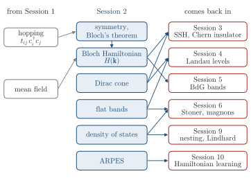

Advanced Quantum Materials 2027 · All lectures · Lecture notes
Session 2. Symmetries, Tight-Binding Band Structure Theory, and Effective Models
Video lecture · Landscape lecture · session2.ipynb · PDF of the notes
From Session 1 we need two things. The first is the language of second quantization, with the hopping term (1.2). The second is the mean-field method of Section 1.12, which turns an interacting, quartic Hamiltonian into an effective single-particle one. Here we leave the interactions aside, and we ask how we solve such a single-particle Hamiltonian.
For a few sites we can diagonalize a matrix directly, but a real material has of order \(10^{23}\) sites, and no computer can diagonalize a matrix of this size. The answer is again symmetry, but now with a different role than in Session 1. There we used it to classify which symmetry a ground state breaks. Here the ground state shares the symmetry of the Hamiltonian, and we use the symmetry to simplify the diagonalization. It turns an infinite-dimensional problem into infinitely many finite-dimensional problems that are easy to solve, and for a periodic system this is Bloch’s theorem.
First we will see symmetry operators and their eigenvalues on small rings. Then we will derive the band of a chain, of a chain with several orbitals per cell, and of the square and cubic lattices. At the end we will read the density of states, the velocity and the mass from a band. We will also derive the Dirac cone of graphene and the flat bands of the Lieb and kagome lattices, and see how ARPES measures a band structure.

- In Session 3 the Dirac cone of this session is gapped, which gives the Chern insulator of Section 3.10, and the chain with two sites per cell becomes the SSH model of Section 3.9.
- The Bloch Hamiltonian is the object whose Berry curvature gives the Chern number in Section 3.5.
- In Session 4 the Landau levels are flat bands with Chern number one, in Section 4.4.
- The density of states at the Fermi level decides the Stoner criterion of Section 6.6, and the nesting of the square lattice drives the instabilities of Section 9.4b.
- The same Fourier method gives the BdG bands of Section 5.8 and the magnon bands of Section 6.15.